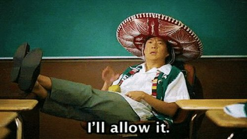

--Adyashanti
"Ego can’t surrender because ego is the thing surrendered.
Ego can’t awaken because ego is the thing awoken from.”
–Jed McKenna
"Watch out for defensiveness. What are you defending? An illusory identity, an image in your mind, a fictitious entity."
–Eckhart Tolle
In a recent podcast panel I was involved in, the instruction to “Allow everything to be as it is” arose.
As in, yes, do that.
And then someone (guess who) asked what “allowing” means, and if it’s even possible.
It was just a question. It wouldn’t seem to require an angry defense.
And yet suddenly there was yelling.
Uh oh.
Is questioning “allowing” not allowed?
Still, things do seem to happen whether humans allow them or not.
I mean, life isn’t sitting around waiting for any person to sign off on it.
So allowing everything to be as it is, that very common meditation instruction, basically pretends we matter and have influence when we don’t.
Confirming the self. Validating. Reifying.
Not that there's anything wrong with that.
It's just the opposite of what is often wanted by so many who turn to inquiry and meditation.
So this isn’t nit-picking wordplay.
Seeing through the self can not happen with language which makes that illusion have nicer feelings, or which verifies its agency and existence.
But ok, no biggie.
And of course, I’m not immune to the charms of trying to let things be as they are. It feels good. Sometimes it feels great. It feels calming to the mind and can bring that lovely floaty buzz.
To the self.
“Happiness is simply to allow everything to be exactly as it is from moment to moment.” --Rupert Spira
Allowing is light, allowing is peaceful, allowing is happy. Yay!
Who wouldn’t like and want more of that?
The thing is, is that all we’re interested in- making the self feel nice?
Is there no interest in seeing through it?
I mean, I'm pretty sure many Mind-Tickler readers want to find, or at least understand, not-I.
And if that’s the case, then notice what exactly it is that does the allowing.
Because that would be the I.
As in, we’re asking the I to allow things to be as they are, in hopes of finding the not-I.
How likely is it that the sense of self actually is interested in finding its own not-realness?
Yep. What could go wrong?
So when we dare ask, “What allows?” we might begin to notice what’s at stake.
Because it could be our very existence.
Which feels scary, and dangerous.
It’s not actually dangerous, though; we’re still sitting here just fine. It just feels dangerous.
Though we can begin to see how an angry defense of a lifelong point of view starts to make sense.
Because the prime directive is- Maintain and protect the story of Me at all costs.
That image. That façade. That not-real not-thing.
We’ll fight for it, dammit!
Hotheaded protection effectively changes the subject.
Diverting from, “Self? What self?” to the much safer and often better-feeling, “Meditation is good; allow everything to be as it is.”
Anger is a veil. Better feelings keep us from looking further.
And then we don’t have to see the self,
our self, US, Me,
for the vapor that it is.
Because that,
we cannot
allow.
--Watch Judy on Buddha at the Gas Pump
--Watch Judy and Shiv Sengupta discuss spiritual anarchy
--Click to watch Judy and Walter Driscoll have fun chatting about about nonduality, the self, consciousness, awareness, free will and other light and breezy stuff
--Watch Judy and Robert Saltzman talk nonduality
“You don’t wake up by perfecting your dream character, you wake up by breaking free of it. There’s no truth to the ego, so no degree of mastery over it results in anything true. Putting attention on the false self only reinforces it.”
--Jed McKenna
“You realize that you’re no one and you've been trying to be someone. You just die and die into the truth of that. Defense and justification keep falling away, and you die into the brilliance of what is real.”
--Byron Katie
“It is only when
The very idea of changing is seen
As false that
One can perceive the changeless.” Wu Hsin
